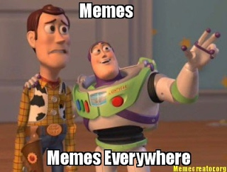
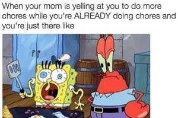
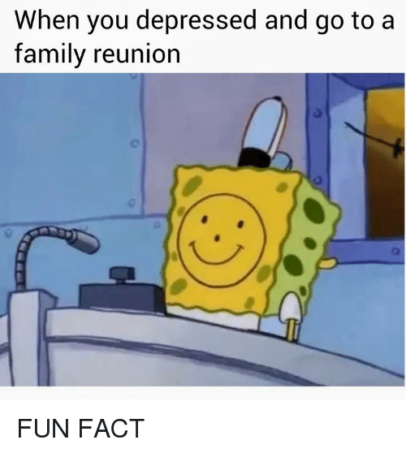

The virality process in memes
In the last post I mentioned something about trends and virality in the food porn phenomenon, but in this post I’m interested in the virality process that goes in the memes sharing phenomenon.

Firstly, I want to clarify what the term meme
means. According to Dawkins the word meme
was used for the first time in 1976 to explain the viral dissemination of an idea. In his book The Selfish Gene, he writes about the Greek root that the term has, which means a product of imitation. The mimetic function of the word comes from the diffusion and dissemination proses of the idea behind the meme that transforms intro a viral process. This process is being caried out through a chain of videos, texts, images and sounds from a person to another. A meme can embody cultural concepts or catch phrases.
Nowadays, memes have became a whole digital culture that people engage with on a daily basis in the online world.
In their research, Taecharungroj and Nueangjamnong explain that the term has an organic evolution because it goes through a variation process where it is created and recreated and constantly adapted. Memes are in an ongoing competition with one another to engage more and more viewrs. From a single event a meme is transformed throgh imitation and rebranding into a viral social phenomenon. A meme quality and succesfulness is measured in the online effect it has, how many people engaged with the meme. Here engagement is quantified through likes, shares and comments.
There are many types of meme in the online enviroment and the transmition process is so fast and broad that it cannot be restraind to a single social media platform. The virality process goes beyond an application, thus a meme can travel and coexist simultaneously on every social media platform. To further explain the meme phenomenon I chose to analyse the SpongeBob SquarePants memes.
SpongeBob is an American animated comedy tv series. The great success that the show had and its adaptability to common social problems resulted in viral cration process of memes from various key moments of the series. The SpongeBob memes are viral because they are very relatable to people's everyday lifes. They approach situations such us dating, university assignment, friendship, parenthood, depression  politics and so much more. I feel confident to say that anyone who looks for a specific topic for a meme can find at least a few very easily.
Squidward, a character from the series, is considered to be the most relatable personage for adulthood and the maturity that it requires, because he embodies the struggles that come with deling with other people and daily situations.
The viralisation process of the memes is explained by Richard Dawkins using a comparison of the gene reproduction.
This assosiation points to the fact that the meme phenomenon is a fast passing process that is very easily transmited.Just as genes propagate themselves in the gene pool by leaping from body to body via sperms or eggs, so memes propagate themselves in the meme pool by leaping from brain to brain via a process which, in the broad sense, can be called imitation.
In conclousion, memes are a form of digital language, people relate to them, talk through and about them and sometimes use them to make points in arguments. The meme phenomenon is the modern language of the digital world.
As SpongeBob himself said...